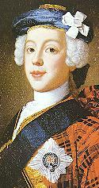

"The accomplished Hero" or "Caledonian Songstress"
"Le héros accompli" ou "La chanteuse calédonienne"
A Pastorale in honour of Charles Stewart
From "English Jacobite Ballads...from the MSS at Towneley Hall" by A.B. Grosart (1877), page 15

Tune - Mélodie "The Praise of Prince Charlie", Irish, Air (3/4 time).
from Joyce's "Old Irish Music and Song" 1909.
Sequenced by Ch.Souchon

1. On the green borders of the silver TWEED, Whose quiv'ring current parts the flow'ry mead, There stands a venerable shady grove, Which PAN delights in and the MUSES love ; 2. Where from their urns, three lovely NAIDS pour, A clear cascade, whose rushing waters roar ; Spreading with lucid rills the vales below, To make ten thousand flowers spring and grow; 3. Here have the muses bath'd as poets sing, There trod the velvet margent of the Spring ; No boisterous wind presumes to press these trees, They only are caressed by ZEPHYR's breeze. 4. Here too the NYMPHS and FAWNS oft take delight, To spend in sportive dance the jovial night Whilst Pan with rural pipe soft music plays (Accordant measures to harmonious lays) 5. Nor the moon by night, nor the sun by day, Pierce thro' the gloom, with his most active ray, Th' embow'ring foliage darkens so complete, So close the interwove espaliers meet; 6. Silence and shade, and gales refreshing play Thro' this sequestered scene both night and day; Hid by the trembling leaves, and PHILOMEL, Does in melodious strains, her sorrow tell, 7. Pained by the thorn her bosom's wo'nt to press And wails her ancient woes without redress : Hard by, the LINNET with delightfull note ; Pours forth the music of her warbling throat; 8. And to the swains with her sweet songs does bring, The welcome tidings of approaching spring, That Philomela's self is jealous grown, Of sounds so soft, so equal to her own. **** 9. One day they spy'd a YOUTH of lovely mien, Who never in the grove till then was seen ; Tall was his stature, amiable his face, Majestic, noble, and of manly grace; 10. Him HARMONY does for her patron choose, And every art, and every gentle Muse. First when they viewed him with admiring Eyes They took him for Appollo in disguise; 11. Hiding his radiant and ambrosial locks, As when he tended King Admetus flocks; [1] He from celestial lineage seemed to spring, A youthful HERO, or at least a King. 12. The feathered choristers with rage divine, Inspired at once by all the tuneful nine, With sounds adapted to immortal lays, In concert they began to Sing his praise: 13. "Who is this SHEPHERD PRINCE? this God unknown, Are we not his? and is he not our own? Whose royal presence thus adorns this place, He's heavenly born, and not of mortal race; 14. With gentle courtesy he wins our hearts ; Pleased with our songs, he cherishes the arts ; Science he loves, and poetry is his Care, And mercy fills his soul beyond compare. 15. The GRACES all, and all'the VIRTUES wait, To render him as amiable as great." Now when the raptured song was warmer grown The nightingale pursued the theme alone. 16. "Guard him, ye Gods, protect him more and more! Shower on him blessings from your endless store! Give him in every Virtue to encrease, To live a conqueror, and to die in peace; |
17. To flourish, thrive, and bloom as he begun, As the gay flower that opens to the sun ; May this YOUNG HERO every wish complete, May his delights be rational and sweet; 18. May his renown both far and near be sung, May all the GRACES hang upon his tongue ; May Jove's fair daughter her rare gifts impart, And all MINERVA's wisdom fill his heart!" 19. The LINNET here with vocal ardour vy'd, Resumed the arduous strain and thus replied: "His voice with such persuasive Sounds inspire, As ORPHEUS could not equal with his lyre, 20. Wait on him VICTORY till he exceeds, In godlike actions and heroic deeds, Great HERCULES; Let him undaunted be As fierce ACHILLES, and from wounds as free; 21. Daring as HOMER does of him rehearse, But make him not so savage nor so fierce, But good and wise, beneficent and great, Indulgent, merciful, compassionate. 22. Let worth and want in him a father find, And let him be the darling of mankind; While the chaste MUSES plant without control, The seeds of every virtue in his soul." 23. Again the shrilling notes the songsters join, Where all the power of voice and skill combine. "He loves our songs, takes pleasure in our art, MUSIC has charms to win his tender heart; 24. It souths, it softens, lulls to pleasing rest, Harmonious truths sink deep into his breast; As the cool dew refreshing solace yields, To the sing'd herbage of the sun-burnt fields; 25.And O Ye GODS to whom he stands allied In many virtues, taint him not with pride : Grant him a loyal people to possess, Crown all his days with fortune and success! 26. Yield PLENTY's cornucopia to his hand, And A NEW GOLDEN AGE to bless th' impov'rish'd land. Him nations shall with acclamations meet And flowers spring and grow beneath his feet." 27. All nature while they Sung, was hush'd as death, The flower-kissing zephyrs, held their breath ; And every flower in the grove that grew, Blush'd, bloomed, or blowed with variagated hue : 28. The three pure fountains of impetuous force Their rushing waters stopt, and stay'd their course ; The SATYRS and the FAWNS that skip and bound, Prick'd their sharp ears, and listn'd to the Sound : 29. Echo alone (who can't her tongue refrain) Told the sweet accents to the rocks again; Flocking together like a swarm of bees, The DRYADS hasten from their hollow trees, 30. To gaze with admiration and surprise, His praise their ears, his person charms their eyes ; They view him and review him with amaze, Their wonder still encreasing as they gaze, 31. Th' accomplished HERO to behold so young, Whom PHILOMEL and her Companion sung. [1] King Admetus flocks : Apollo helped him to secure the "lions and boars" for his chariot, needed to win Alcestis, daughter of Pelias. Un rossignol et une linotte chantent les mérites du Jeune Héros, le PRINCE BERGER, sur les bords de la Tweed métamorphosés en campagne grecque pleine de muses, de nymphes, de faunes, etc. et annoncent l'arrivée imminente d'un nouvel Âge d'Or . |
|
The child was reared as a future king in the Catholic religion and one of his private tutors was the
Chevalier de Ramsay
-who had left Scotland for France in 1708- who made a book on the chief discipline he taught him "Treaty on Civil Government", a paraphrase of Fénelon's "Maxims". He also learned the fine arts. He was rapidly fully conversant with three languages: English -but his extant letters in this language are ill-spelt and awkward-, Italian and French -he wrote a perfect French.
On 20th June 1725 a second son was born, Henry, who was titled Duke of York. In 1734 a Stuart cousin of Charles's, the duke of Liria, son of the Duke of Berwick, who was proceeding to join the Spanish army besieging Gaeta , passed through Rome and offered to take Charles on his expedition. The boy of fourteen, having been appointed general of artillery, shared with credit the dangers of the successful siege. (Source: Encyclopaedia Britannica 1911) |
L'enfant fut élevé comme un futur roi, dans la religion catholique, et l'un de ses percepteurs fut le
Chevalier de Ramsay
-qui avait quitté l'Ecosse pour la France en 1708- , lequel reprit la matière principale de son enseignement dans son "Essai sur le gouvernement civil", inspiré des "Maximes" de Fénelon. A ces études on joignit celle des beaux-arts et rapidement il sut parler avec une égale facilité trois langues: l'anglais -bien que les lettres qu'on a de lui dans cet idiome soient rédigées avec une orthographe et un style douteux, l'italien et le français qu'il écrivait, en revanche, à la perfection.
Le 20 juin 1725 naquit son frère, Henri, titré Duc d'York. En 1734 un cousin de Charles, le duc de Liria, fils d'un Stuart, le duc de Berwick, passa par Rome pour rejoindre l'armée espagnole qui faisait le siège de Gaëta . Il proposa que Charles l'accompagne au cours de cette expédition. Le jeune garçon, alors âgé de quatorze ans, fut promu général d'artillerie et se comporta avec bravoure face aux dangers encourus lors de ce siège victorieux. Source: Encyclopédie Britannique 1911 |